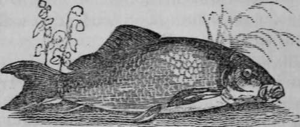

A Description Of A Carp
Description
This section is from the book "The Art Of Angling Greatly Improved", by An Unknown Author. Also available from Amazon: The Art of Angling Greatly Improved.
A Description Of A Carp
The time for angling for Carp is very early in the morning, and late in the evening, but they will bite at noon, if disturbed by a sudden flush of water. They prefer deep holes with a very gentle stream, and their favourite places of resort are the stumps and roots of trees. They spawn generally in May, June, or July, especially the river Carp, according to the different nature of the water which they frequent, and the quality of the soil.
The best baits are the marsh and flag worms ; but too much eagerness must not be shown in striking him when he bites, for he will nibble some time before he will take the bait into his mouth, and then the line should be eased about ten or a dozen inches.
The following paste is highly recommended for Carp: Take the flesh of a rabbit, and bean-flour sifted very finely, mix them writh honey, and incorporate them in a mortar, or they may be worked by the hand into small balls ; the whole must be tempered to a substance sufficiently stiff, so as to prevent it being washed off the hook. If virgin-wax or clarified honey be mixed with it, it will keep all the year.
When angling for Carp in ponds, it will be necessary to rise at break of day, and the best bait that can be then used is the red-worm, well scoured and dipt in tar. The Carp being a very shy fish, it will not be advisable to approach too near to the edge of the pond, or river, for which reason the rod and line should be long, as the bait should be thrown in as far as possible from the shore. The fish, however, may be attracted nearer by baiting a place, or by casting the worms in by handfuls ; for as the water is still in ponds, the worms cannot be carried to any considerable distance from the place where it is intended to fish.
In angling with paste, the better to beguile the Carp, some pellets should be thrown into the water, some hours before fishing is commenced, and if some be thrown in a day or two before, the greater will be the chance of success. If the pond be of great extent, throw into one particular place either grains or blood mixed with cow-dung, or bran mixed with the crust of white bread after having been well soaked in water, and made up into the consistency of paste. Whilst angling with paste, whether in a pond or river, chew a little white or brown bread, and cast it about the place where die float lies. Crumbs of white bread mixed with honey and worked up into a paste, will be found an enticing bait for Carp.
The month of February, and the intervening ones to June, are the most favourable for Carp fishing. If the weather be mild, they will bite more freely than at any other time of the season, and if there be a slight shower of rain falling, the angler will experience good sport at any time of the day. It must, however, be observed, that in cold weather the Carp will not bite at all. A long light rod should be used, with a reel-line of the first description, the bottom of which must be at least two yards of gut. Smaller hooks should be used than for other fish ; for worms the hook should be No. 5 or 6; for wasp-grubs, No. 7; and for maggots, No. 8 or 9 ; the line should be lightly leaded with small shot a few inches from the hook, using a very small goose-quill float.
If a large Carp be hooked, he will make an obstinate resistance; the line should therefore, be given it cautiously, drawing ar jetting it go alternately, until the fish be exhausted. The Carp is a most cunning fish, and will use every endeavour to entan gle the line amongst the weeds and roots A Carp will seldom take a bait in a pond until the beginning of May.
Continue to: